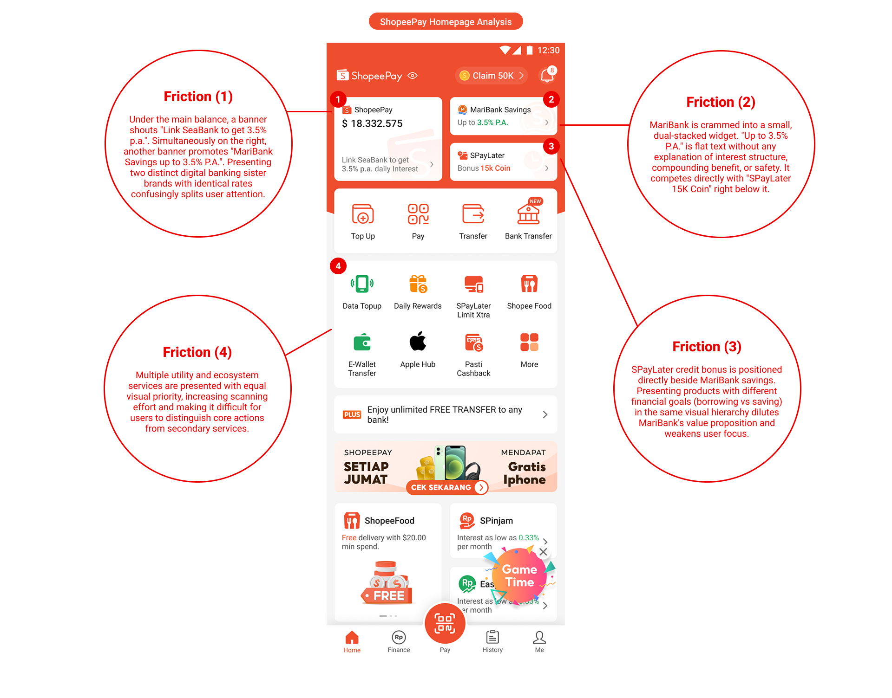
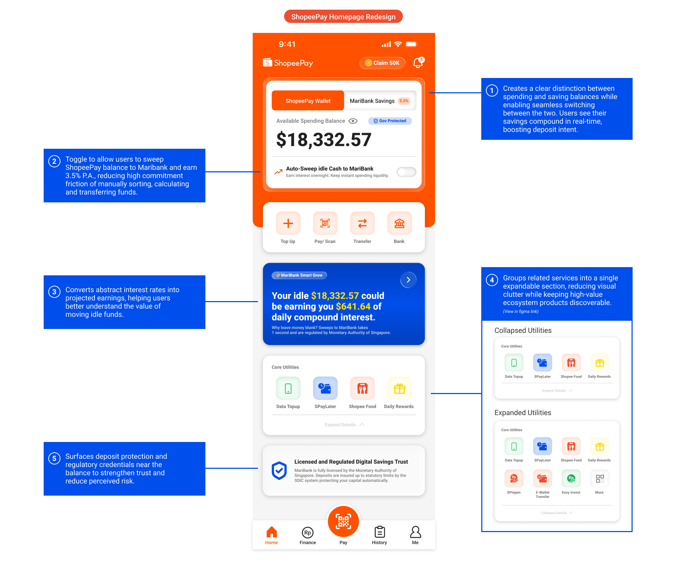
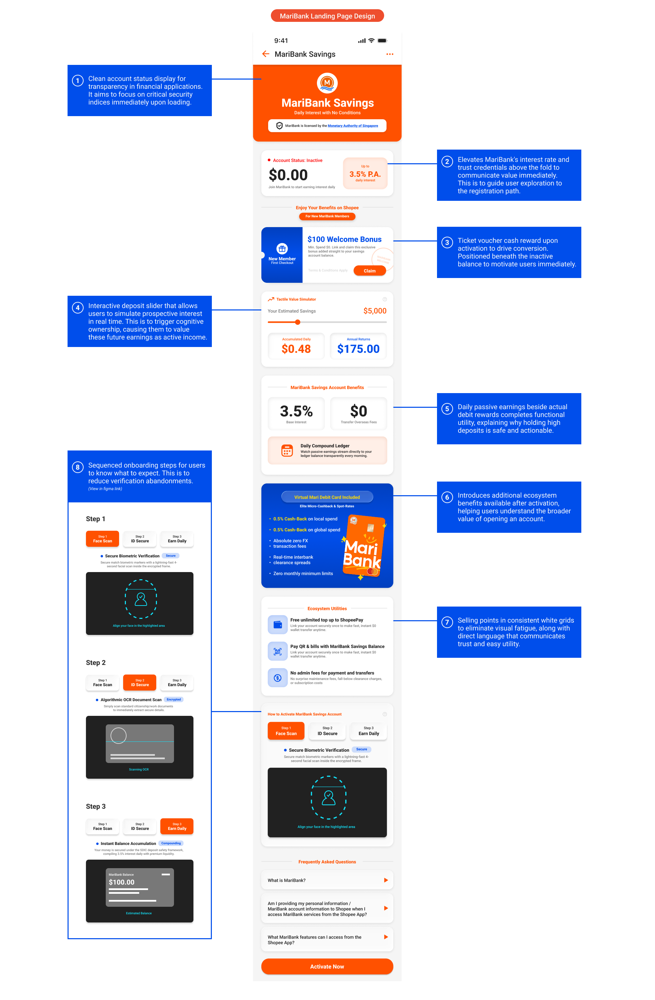

Monee Application Redesign
UIUX, HTML & CSS — 2026
Before exploring solutions, I wanted to understand why users weren't engaging with MariBank
despite it being integrated within ShopeePay. Using AI-assisted research synthesis alongside
manual product analysis, I reviewed user feedback, identified recurring pain points, and mapped
the existing journey to uncover where attention, trust, and decision-making broke down. This
ensured the redesign was grounded in real user behaviour rather than assumptions.
These insights were then translated into clear problem statements and product strategies that
guided every design decision. By focusing on both the user experience and the business objective
of increasing MariBank adoption, I established a framework for creating solutions that were
intuitive, low-friction, and naturally integrated into the ShopeePay ecosystem.

The first step was understanding why MariBank struggled to gain attention within the existing
ShopeePay experience. Rather than relying on assumptions, I analysed the current homepage
alongside real user feedback, identifying recurring patterns in how users navigated the
interface and where friction emerged. I found that MariBank was competing against multiple
financial products for the same visual space, making it difficult for users to recognise its
value proposition or understand why they should open an account.
To make this process more efficient, I incorporated AI to synthesise large volumes of community
feedback, organise recurring complaints into themes, and challenge my initial observations with
alternative perspectives. This allowed me to spend less time sorting information manually and
more time evaluating which problems were genuinely worth solving. The exercise reinforced that
effective UX begins with understanding behaviour before proposing solutions, and that AI works
best as a research companion rather than a decision maker.
With the key friction points identified, I redesigned the homepage to improve MariBank
discoverability without disrupting ShopeePay's core transactional experience. Instead of adding
more promotional content, I focused on restructuring the information hierarchy, creating clearer
distinctions between spending and saving, surfacing trust signals earlier, and reducing the
cognitive effort required for users to understand the benefits of moving money into MariBank.
Throughout the exploration, AI became part of my ideation workflow. I used it to generate
alternative layouts, question design assumptions, and rapidly compare different approaches
before refining them manually in Figma. This iterative process taught me that strong product
design is rarely about introducing more features; it's about presenting the right information at
the right moment. AI accelerated exploration, but the design decisions were ultimately grounded
in user behaviour and product strategy.

The landing page was redesigned to better support users once they expressed interest in
MariBank. Instead of presenting isolated promotions and fragmented information, I restructured
the experience into a clearer narrative that progressively builds trust, explains the product's
value, reduces onboarding uncertainty, and encourages users towards account activation. Features
such as earnings simulations, regulatory reassurance, transparent benefits, and guided
onboarding were intentionally sequenced to match users' evolving decision-making process.
Alongside interface design, I also experimented with AI-assisted development through vibe
coding, using AI to help prototype interactions in Visual Studio Code before publishing a
functional prototype on GitHub. Combining research synthesis, product thinking, interface
design, and rapid prototyping strengthened my confidence in working across the entire design
process. More importantly, it reinforced that AI is most valuable when it expands a designer's
ability to explore, iterate, and validate ideas, not when it replaces critical thinking or human
judgement.
Check out the coded digital prototype
here
